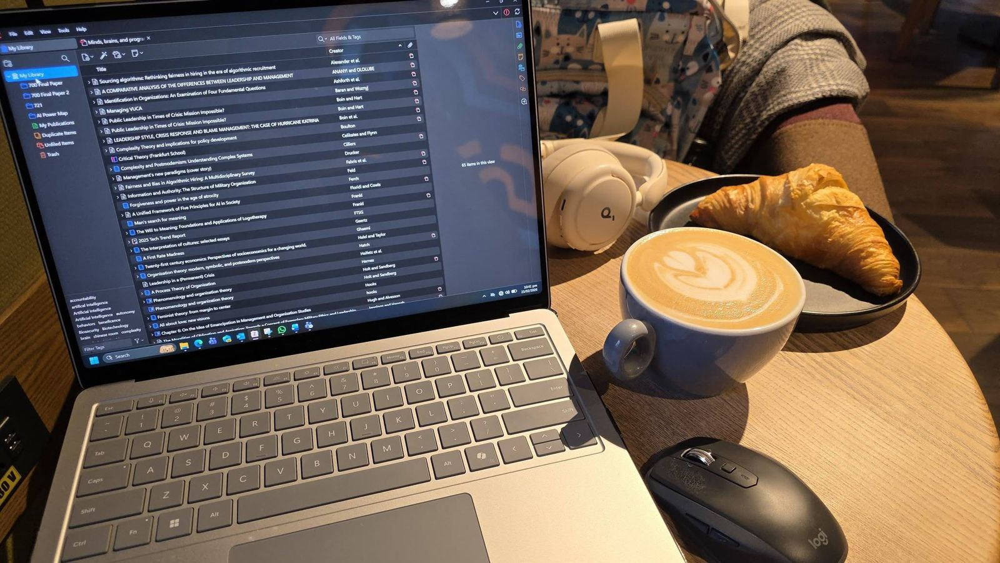
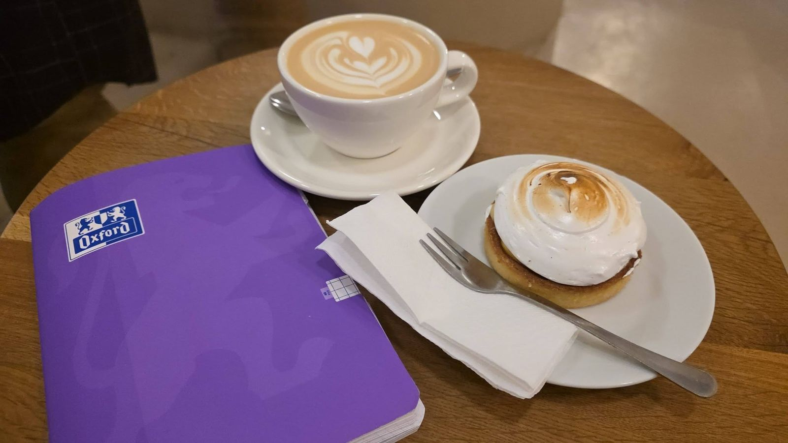
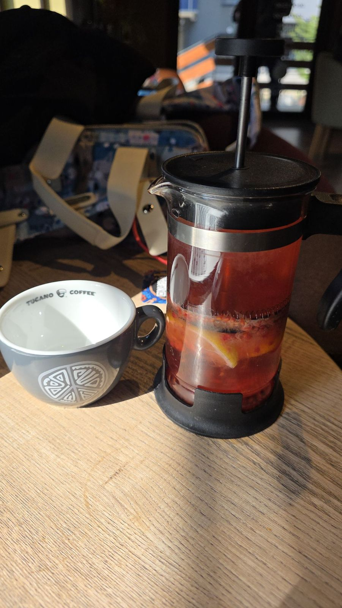

Journey 01 · Timișoara Note 5 of 11 Field Note
The Third Place
Hot Coffee, Fresh Pastries and a Slow Pace
I have found a coffee shop that feels almost improbably close to my dorm. Closer, in fact, than my mailbox to my front door at home – although I do have to negotiate far more stairs here than at home to get from my room to the ground floor. The lack of elevators is doing wonders for my leg and calf workouts, whether I want it or not.
I usually come in shortly after they open. This is not as insanely early as it may seem to my US readers. Unlike the Starbucks by my house, which opens at 4am, this shop opens “early” as in 8am. I have been told by the Romanians I have talked with here that my “American insistence” of having coffee so early seems weird to them. I am not sure how they would take my insistence that actually, the places I most like to get my early morning caffeine rush from are drive through coffee shops since the number of “drive through” places here are few to non-existent.
For the first thirty or so minutes of my coffee shop mornings, it is only me and the staff, baristas who move without visible urgency, and who make every drink ristretto without having to be asked. Nothing about the space – from the eclectic collection of comfortable, inviting chairs to the abundance of power plugs suggests that the day is about to accelerate.

Students begin to drift slowly in closer to 9 or 9:30, still barely awake often in groups. Backpacks settle onto chairs, jackets hang over the backs of seats, books and laptops pile on tables. Nearly every order is for here – it is rare I see anyone order and leave immediately with their drinks.
But what I keep noticing is less what people are doing, but the pace at which they do it.
No one appears to be calculating how long they have been sitting there, and like them, I have spent hours working on my laptop or reading a book without so much as a side look from a barista. There is no hovering staff member clearing plates the moment someone leans back in their chair. No subtle cues that it is time to vacate the table.
People sit. They talk. The conversations begin before drinks arrive and continue long after the cups are empty. Multiple languages drift through the air, conversations on politics, current events, news and classes – there is little room for small talk here, the undercurrent is connection, not performance. Sometimes differences surface, but disagreements over politics may as well be disagreements over a favorite vegetable for as much emotional weight as it is given. As an American, this kind of political openness is fascinating.
Almost no one is on their phone.

When someone steps outside to smoke – which is often, the smoking culture is alive and well here in Eastern Europe – they leave their coat and their drinks behind. They return a few minutes later and resume their place without ceremony. Even in the busiest coffee shop, I miss whatever secret communication that happens between barista and customer that indicates they will be back in a moment and preserves their table, but it must happen. I’ve seen it now in multiple locations: it is unremarkable to everyone but me.
Timisoara is not a small town. With roughly 250,000 residents, it is comparable in size to Spokane, Washington or Richmond, Virginia. And yet, there is a visible trust operating in these small public rituals that feels unfamiliar. I watch even now as I am typing this, as someone leaves their laptop open and bag as they step outside to smoke, unbothered.
The roles I see people play feel familiar, and are recognizable. Students are studying, couples negotiating affection. Friends circle around politics, groups test out new languages that easily ebb and flow into each other. An older man reads a newspaper, a lady reads a novel while sipping at her tea. None of these patterns would be out of place in any number of cities.
What feels different is the rhythm, the slowed-down paced that makes what feels the same also feel different. Back home, coffee feels transactional. It is a stop between obligations, fuel for the next marathon waypoint in the never-ending hustle of life. Grab and go, not sit and sip.
The coffee shops feel more like a space built for people, not a place built around a process of efficient caffeine distribution.
I think I can start to see how a culture inhabits time to be just as revealing to how it organizes space.

Originally published at fieldnotesfromabroad.com/2026/03/03/the-third-place/